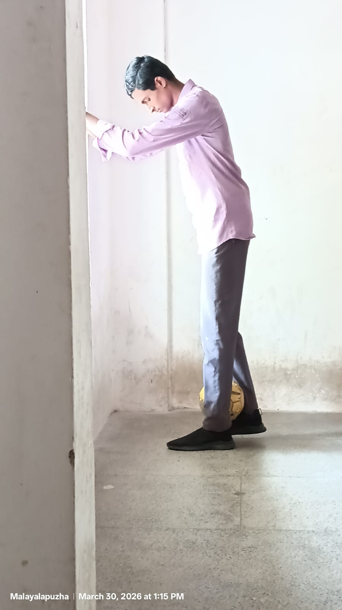

Alexander (aka Android) is a remarkably intelligent and observant individual, known for his deep knowledge and sharp understanding of automobiles. His passion for cars goes beyond casual interest—he dives into details like engine performance, design, and mechanics with the curiosity of an expert. A true automobile enthusiast, he can talk about cars for hours and still have more to say.
One of his most unique traits is his handwriting—clean, precise, and perfectly structured, almost as if it were printed by a machine. This robot-like perfection is exactly what earned him the nickname “Android.”
Everything he does carries a sense of accuracy and control, making him stand out effortlessly.
Outside of machines, Alexander has a fierce passion for football. Whether playing or watching, his energy and dedication are intense, showing his competitive and determined nature. He doesn’t just enjoy the game—he lives it with full spirit.
At first glance, he appears calm, composed, and like a complete gentleman—someone who seems polite and well put together. But beneath that smooth exterior lies a completely different vibe. He has a sharp, fearless, and slightly dangerous edge to his personality—calculated, confident, and unpredictable at times—almost like an assassin hidden behind a suit.
